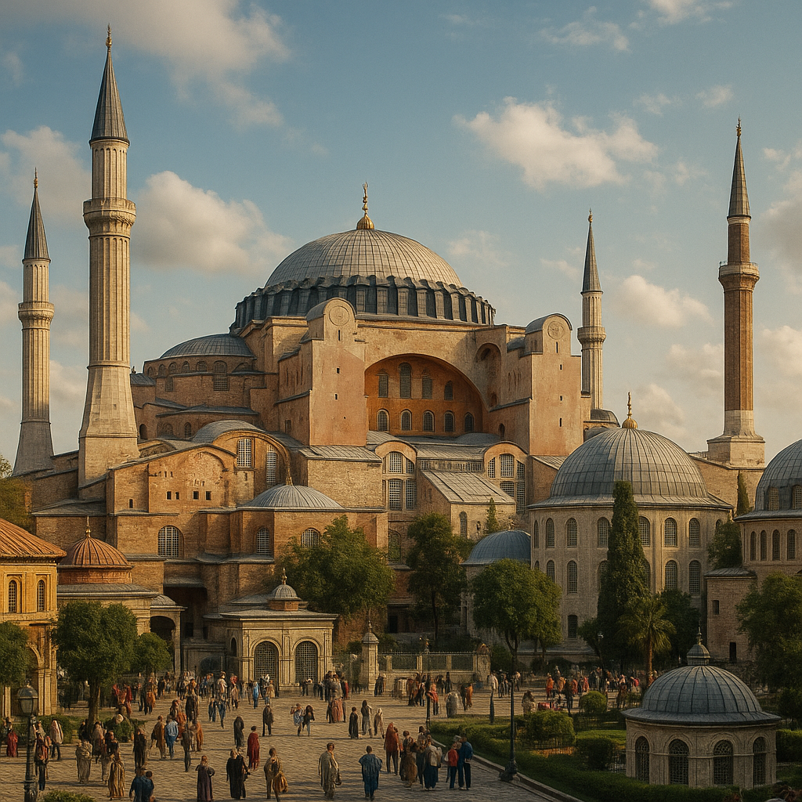
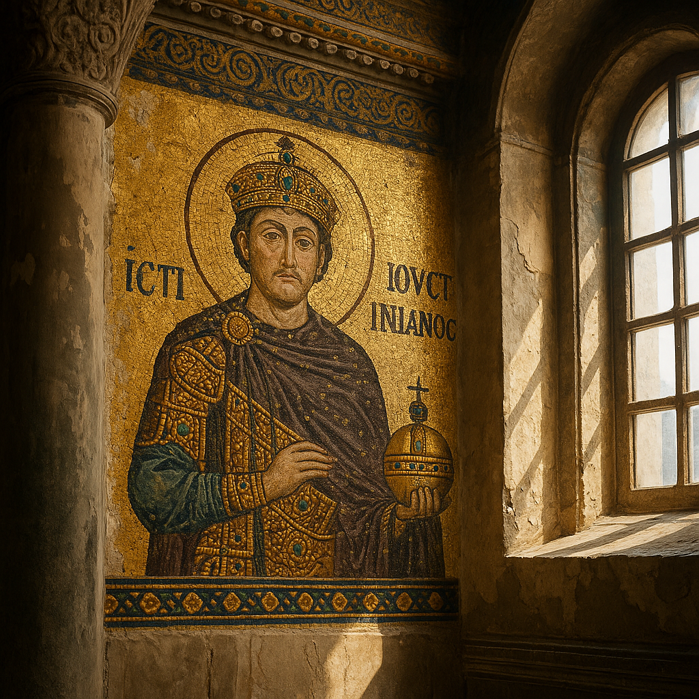
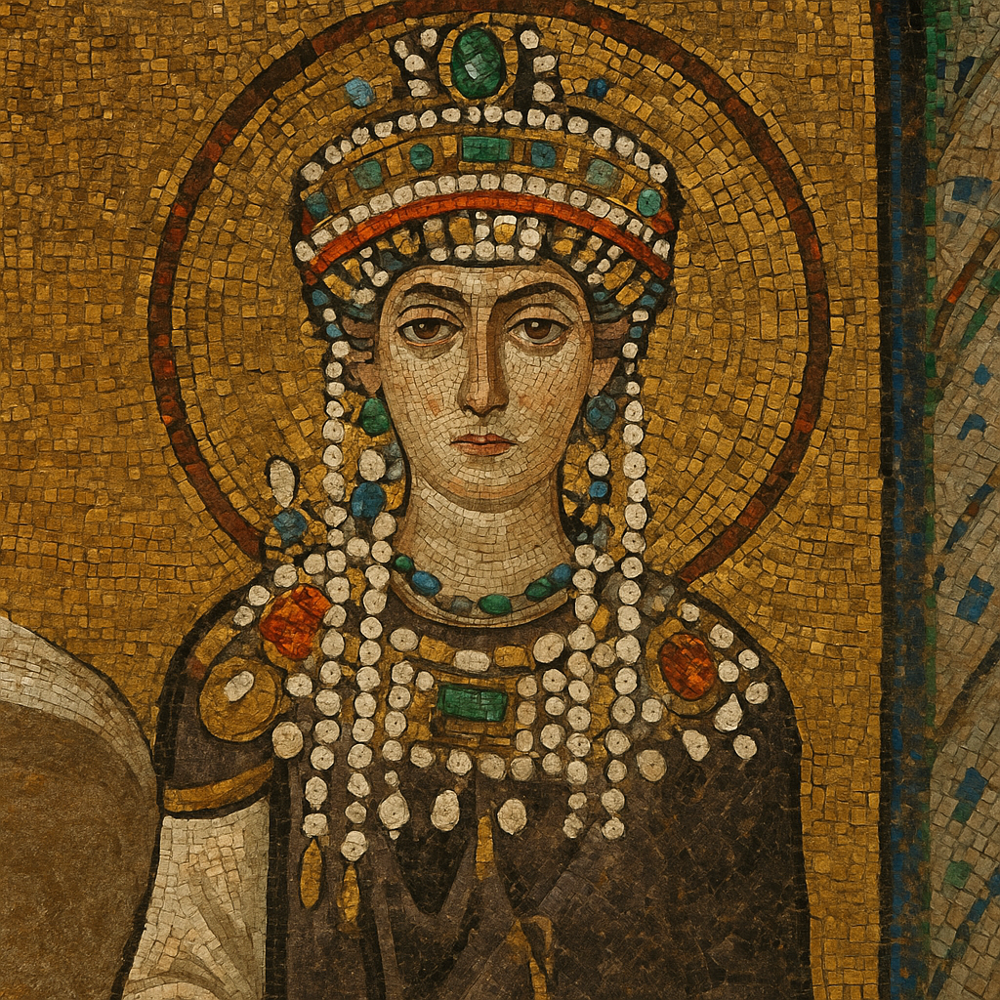
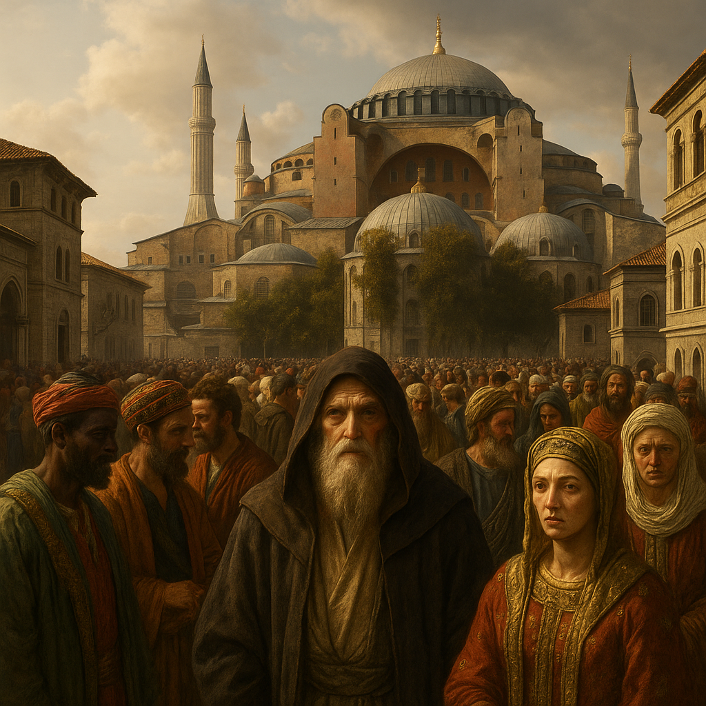
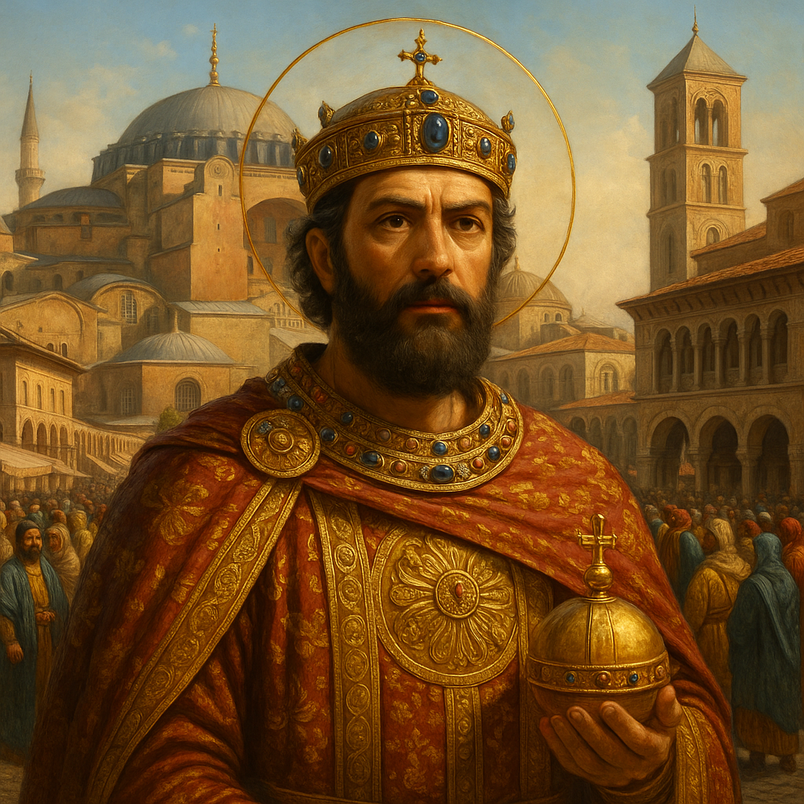
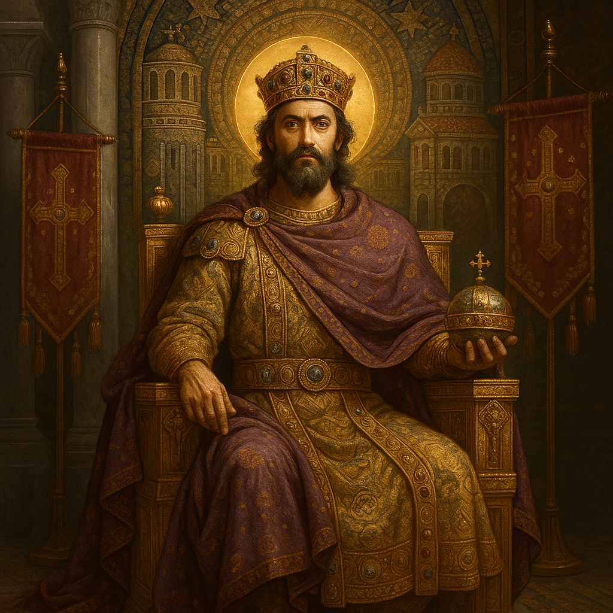

Somewhere between the marble mosaics of Ravenna and the glimmering domes of Constantinople, a prototype of the influencer was born.
Not with ring lights or viral dances, but with golden halos, orbs of authority, and processions choreographed to dazzle believers and ambassadors alike.
This was Byzantium—a state where image was ideology, and emperors weren’t just rulers—they were living symbols, wrapped in ritual, cloaked in iconography, and embedded deep into the psyche of an empire.
As a history enthusiast and a content strategist, I see in Byzantium more than just a crumbling past.
I see an early masterclass in branding—one that speaks directly to how we shape perception, build legacy, and command attention in today’s hyper-visual world.
🧱 Byzantium, the Storyteller State: Image as Ideology

The Byzantine Empire (330–1453 CE), heir to Rome and vanguard of Orthodox Christianity, wasn’t just political machinery.
It was a myth-making machine.
The emperor wasn’t merely a man; he was a vessel of divine authority.
A bridge between heaven and earth.
That demanded more than policy.
It demanded performance.
MAnd that performance was meticulously designed.
🖼️ Mosaics, Coins & Seals: The Original Visual Identity Suite
Every emperor was a walking, talking brand.
And every medium was harnessed to reinforce that brand:
🎨Mosaics as Public Memory
From "Justinian and Theodora in San Vitale to Constantine IX in Hagia Sophia, emperors were immortalized in tile.
- Purple robes = divine legitimacy
- Halos = God’s favor
- Size and placement = dominance over clergy and generals
Each visual was curated for maximum permanence—Byzantium’s version of a never-expiring profile picture.
🪙 Coins as Portable Propaganda
Imperial faces adorned currency empire-wide.
- Emperors used coins to declare legitimacy, cement succession, and project divine approval
- New reign = new imagery, often accompanied by slogans or Christ iconography
They weren’t just money.
They were portable propaganda.
📜 Edicts & Seals as Brand Guidelines
Every imperial decree reinforced authority through language, lineage, and theology.
Seals bore Christograms and emblems to remind recipients:
This isn’t just law.
🤲 Ceremony as Content Strategy: Turning Power into Performance

Byzantium turned power into performance.
👑 Coronations & Military Processions
Imagine elaborate processions through the Augustaion square, robed dignitaries, censers swinging, chants echoing off colonnades.
These weren’t just rituals.
They were strategic visibility moments, reminding the masses and nobility alike of the emperor’s divine station.
🏛️ Sacred Architecture & the Hagia Sophia
The Hagia Sophia wasn’t just a church.
It was a monumental brand asset, designed to awe and elevate.
From imperial entrances to private chapels, every stone echoed, “This is where heaven meets the human.”
📆 Liturgical Hijack
Byzantine emperors strategically embedded themselves into the Church calendar—feast days, relic unveilings, miracle commemorations were all used to keep the imperial presence spiritually relevant.
👸🏽 The Empress Effect: How Women Shaped Imperial Perception

The Byzantine brand wasn’t just masculine.
✨ Theodora, Irene & Zoe: Visual Tacticians
These women used fashion, coins, and co-regency to stake their claim in a male-dominated narrative.
- Theodora: Equal-sized mosaic alongside Justinian
- Irene: First woman to rule in her own name, manipulated icon policy to win over clergy
- Zoe: Rebranded herself across multiple husbands—still appearing solo on a few coins
Byzantium’s women were visual tacticians—wielding influence through patronage, architecture, and public spectacle.
👥 Who Was the Audience? Messaging for Clergy, Military, and Diplomats

Branding wasn’t just for the masses.
🧠Internal Factions vs. External Diplomacy
- Clergy needed theological signals
- The military needed strength displays
- Bureaucracy needed continuity cues
Each message was coded for its viewer—an early form of audience segmentation.
🌍 External Diplomacy
Foreign dignitaries were immersed in theatrical receptions—gifted robes, relics, and marvels of Constantinople’s grandeur.
The emperor’s presence was curated like a luxury launch—exclusive, reverent, unforgettable.
⏳ The Legacy Audience
More than PR, the branding was archival.
Emperors were designing for history, ensuring future generations would see them as pious, powerful, and permanent.
🧨 When the Brand Cracked: Iconoclasm, Usurpers & Disaster Response
FEven Byzantium’s sleek system faced glitches.
🔥 Crises of Image
- Iconoclasm: a civil war over sacred imagery itself
- Usurpers: always “restoring order,” borrowing old emperors’ imagery for legitimacy
- Disasters: plagues, losses, or scandals were met with public acts of repentance or miracle narratives to salvage the imperial brand
🛠️ Brand Repair Campaigns
Rulers would rebuild churches, sponsor saints’ cults, or mint new coins to reshape public memory.
In short: Byzantines understood brand repair long before Twitter apologies became a thing.
💼 Timeless Lessons from an Imperial “Feed”

What can modern communicators, creators, and founders learn from Constantinople’s kings?
- 👁️ Every detail speaks: clothing, language, layout
- 🎯 Message control is legacy control
- 🎭 Ritual matters—launch events, keynotes, and ceremonies anchor brand memory
- 🧭 Tie your story to a higher meaning—religion then, mission today
- 🧠 Design for the future—leave assets that last, not just content that trends
Byzantine emperors didn’t need social media.
They had ritual, repetition, and iconography, and it worked for a thousand years.
🛠️ Final Thoughts: Influence Wears a Halo

The Byzantines were master narrators.
Their emperors didn’t rule by might alone, but by myth.
They fused theology, theater, and aesthetics to build a brand that felt eternal.
In a world flooded with personal brands and digital personas, perhaps we can still learn something from the empire that turned divine right into dazzling ritual, and governance into spectacle.
Because long before influencers wore Dior, emperors wore purple, and the whole world watched.